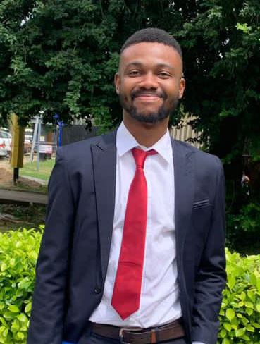

Eluwa Chinonso Victor
Data Analyst | Machine Learning Engineer | Backend Developer

Professional Summary
First-Class Industrial Chemistry graduate with a strong foundation in analytical thinking, data analytics, backend development, and machine learning. Skilled in building APIs, managing databases, and developing predictive models to solve problems. I am passionate about applying technology to improve decision-making, enhance operational efficiency, and support digital transformation in consulting and financial services.
Core Skills & Competencies
-
Programming, Databases & Data Management
- Python
- SQL
- MongoDB
- Javascript
- HTML & CSS
-
Backend Development
- RESTful APIs
- API authentication
- Server-side API design & logic
-
Machine Learning
- Supervised Learning
- Unsupervised Learning
- Time Series Forecasting
- Deep Learning
-
Data Analysis & Visualization
-
Statistical Analysis
- Exploratory Data Analysis
- Feature Engineering
-
Data Visualization Tools
-
Professional Competencies
- Teamwork & Collaboration
- Problem Solving
- Adaptability
- Digital Transformation
Work Experience
IT Auditor - KPMG
Sep. 2026 - Present
AI Data Annotator - Hugo Technologies
Sep. 2025 - Sep. 2026
- Contributed to machine learning development for large language models through data annotation for Meta with 91% accuracy and 12-minute AHT across all workflows.
- Applied analytical thinking, attention to detail, and digital tools to support AI operational efficiency.
Laboratory Chemist - EnvironQuest Nigeria
July 2024 - June 2025
- Analyzed and interpreted complex data sets with high accuracy, ensuring timely reporting in line with industry compliance and quality standards.
- Performed a wide range of physiochemical analyses during Environmental Compliance Monitoring (ECMs) and Environmental Impact Assessment (EIA), for industry leaders such as SEPLAT Energy, Mobil PLC, Brenntag Chemicals Nigeria Limited, Africa Access 3pl, Carbon Afrika etc.
- Conducted elemental and trace metal analysis with Atomic Absorption Spectroscopy (AAS) and X-ray Fluorescence (XRF).
Education
University of Lagos, Nigeria
Bachelor of Science, Industrial Chemistry, First Class Honors (CGPA: 4.61/5.00) [Oct. 2023]
- Service award for tutoring at University of Lagos Science Students Association (ULSSA) & Students’ Chemical Society Nigeria (SCSN) for increasing student success rate in sophomore chemistry from 39% to 65%.
- Awarded excellence recognition for outstanding undergraduate dissertation during project defense.
More